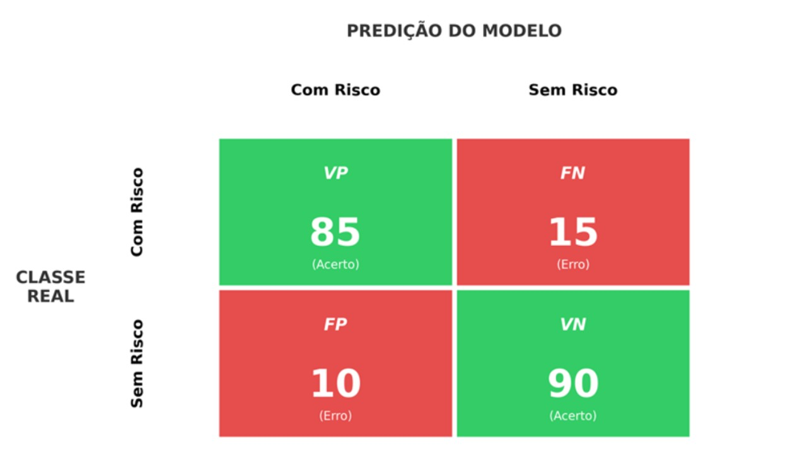
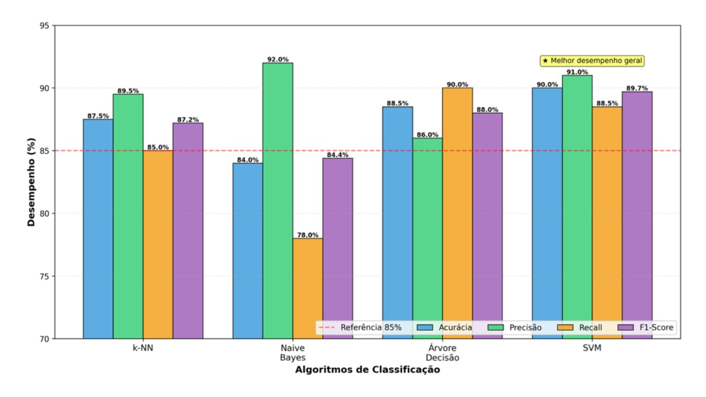

Módulo 3 | Aula 2
Aprendizado Supervisionado
Avaliação dos modelos de classificação
Após o treinamento é preciso avaliar o modelo, ou seja, determinar se ele está realizando previsões generalizáveis. Existem várias métricas e técnicas de validação para modelos de classificação. De modo geral, nessa etapa são utilizados o rótulo original da base de teste e o rótulo predito.
Quando estamos lidando com um problema de duas classes, ou seja, o rótulo apresenta apenas dois valores possíveis, verdadeiro e falso, podemos utilizar a matriz de confusão, que considera os valores preditos da base de teste como verdadeiros positivos (true positive -TP), verdadeiros negativos (true negative-TN), falsos positivos (false positive-FP) e falsos negativos (false negative-FN). Para isso, é considerado o rótulo real da base de teste; os verdadeiros positivos e os verdadeiros negativos são aqueles objetos que o modelo conseguiu predizer corretamente. No entanto, os falsos positivos e os falsos negativos são os que não foram alocados corretamente em suas classes.
| Valores Preditos | |||
|---|---|---|---|
| classe SIM | classe NAO | ||
| Valores reais |
classe SIM | TP | FN |
| classe NAO | FP | TN | |
Além da matriz de confusão, vamos apresentar outras ferramentas de avaliação: acurácia, precisão, revocação (Recall) e F1-score.
Essa métrica considera o número de acertos dividido pelo total da base. É considerada a mais simples e recomenda-se utilizar em bases de dados com aproximadamente a mesma quantidade de objetos para cada classe, ou seja, base de dados balanceada.
É dada pelo número de objetos corretamente classificados como pertencentes à classe (positivos verdadeiros) dividido pelo total de objetos classificados como pertencentes à classe, sejam eles de fato pertencentes à classe ou não (verdadeiros positivos + falsos-positivos). Ao realizar detecção de spam, é melhor evitar que e-mails legítimos sejam marcados incorretamente como spam; com isso, a precisão é uma métrica indicada para validação do modelo.
Também conhecida como revocação ou sensibilidade, é o número de objetos corretamente classificados como pertencentes à classe dividido pelo total de exemplos que realmente pertencem à classe (verdadeiros positivos + falsos-negativos). Exemplo de uso: diagnóstico médico, quando é fundamental detectar todas as ocorrências de uma doença, mesmo que alguns falsos-positivos apareçam.
É uma média harmônica entre precisão e recall, indicada para conjuntos de dados com classes desproporcionais. Em problemas de classificação de fraude financeira, tanto a precisão (evitar falsos positivos) quanto o recall (capturar todas as fraudes) são importantes.
Com essas métricas também é possível validar conjunto de dados que apresentam no rótulo mais de duas classes. Para isso, calcula-se a proporção de previsões corretas ou calcula-se a métrica para cada classe individualmente e tira-se a média desses resultados, bem como ponderam-se os resultados com base no tamanho de cada classe, tratando todos os exemplos como um único conjunto.
Considere o mesmo conjunto de pacientes classificados como “com risco” ou “sem risco” para determinada condição de saúde. Após o treinamento de diferentes modelos de classificação (como k-NN, Naive Bayes, árvore de decisão e SVM), cada modelo é aplicado a um conjunto de teste composto por pacientes cujas classes reais são conhecidas.
Para cada paciente do conjunto de teste, o modelo gera uma predição (“com risco” ou “sem risco”), que pode então ser comparada ao rótulo real. A partir dessa comparação, é possível construir a matriz de confusão, identificando os verdadeiros positivos (pacientes corretamente classificados como “com risco”), verdadeiros negativos (pacientes corretamente classificados como “sem risco”), falsos-positivos (pacientes classificados como “com risco”, mas que não apresentam a condição) e falsos-negativos (pacientes classificados como “sem risco”, mas que apresentam a condição).
Matriz de Confusão - Exemplo de Diagnóstico

Com base nesses valores, as diferentes métricas de validação podem ser calculadas.
- A acurácia indica a proporção total de pacientes corretamente classificados.
- A precisão mede a confiabilidade das predições positivas, ou seja, entre os pacientes classificados como “com risco”, quantos realmente pertencem a essa classe.
- O recall avalia a capacidade do modelo de identificar corretamente todos os pacientes “com risco”.
- F1-score combina precisão e recall, sendo especialmente útil quando há desequilíbrio entre as classes.
Métricas de Avaliação para Classificação
| Métrica | Fórmula | Cálculo | Valor | Significado |
|---|---|---|---|---|
| Acurácia | (VP+VN)/Total | (85+90)/200 | 87,5% | Proporção de acertos totais |
| Precisão | VP/(VP+FP) | 85/95 | 89,5% | Confiabilidade das predições positivas |
| Recall | VP/(VP+FN) | 85/100 | 85,0% | Capacidade de encontrar todos os positivos |
| F1-Score | 2×(P×R)/(P+R) | 2×(0,895×0,850)/(1,745) | 87,2% | Equilíbrio entre precisão e recall |
Baseado em: VP=85, VN=90, FP=10, FN=15 (200 pacientes)
Ao comparar os resultados obtidos por diferentes modelos, é possível observar que um mesmo conjunto de dados pode gerar desempenhos distintos dependendo do algoritmo utilizado. Alguns modelos podem apresentar alta acurácia, mas baixo recall, indicando dificuldade em identificar todos os pacientes em risco. Outros podem priorizar o recall, ao custo de um maior número de falsos positivos.
Comparação de Desempenho entre Modelos de Classificação

Valores muito elevados para todas as métricas, especialmente quando próximos de 1, devem ser interpretados com cautela, porque podem indicar que o modelo se ajustou excessivamente aos dados de treinamento (overfitting). Em problemas reais de saúde, é fundamental buscar equilíbrio entre as métricas, considerando o impacto prático de falsos-positivos e falsos-negativos no contexto da tomada de decisão.
Dessa forma, a avaliação dos modelos não se resume a identificar o melhor desempenho numérico, mas envolve compreender como cada métrica reflete o comportamento do modelo diante do problema analisado.
Se quiser aprofundar, acesse o script da aula 3 (item XX) e aplique as métricas de avaliação apresentadas nesta seção. O script permite testar os cálculos usando a base de dados Íris.